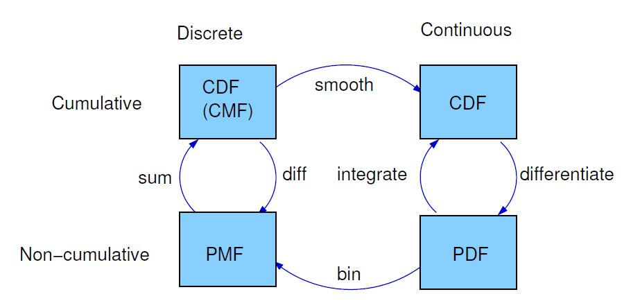
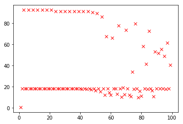
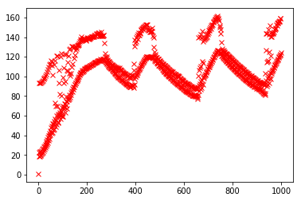
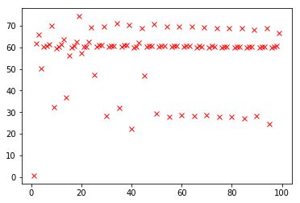
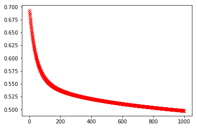

02 Nov 2017
Common terms
- mean (np.mean()): average
- spread: A measure of how spread out the values in a distribution are
- variance (np.var()) : A summary statistic often used to quantify spread
- standard deviation (np.std()) : The square root of variance, also used as a measure of spread
- mode : the value that appears most often in a set of data. scipy-func
# mode calculation using scipy
a = np.array([1,1,1])
from scipy import stats
stats.mode(a)
- normal distribution : An idealization of a bell-shaped distribution; also known as a Gaussian distribution
- uniform distribution: A distribution in which all values have the same
frequency
- tail: The part of a distribution at the high and low extremes
- outlier: A value far from the central tendency
- normalization : wiki
- PMF : Probability mass function (PMF) a representation of a distribution as a function that maps from values to probabilities. good for small dataset
- CMF : cumulative distribution function wiki , quantile , pandas-quantile , numpy-percentile
Pearson’s R
wiki
ranges from -1 to 1 and represents correlation
# x, y are numpy array or pandas series
def pearson_r(x , y):
#standardize x and y
xstd = (x - x.mean())/x.std()
ystd = (y - y.mean())/y.std()
pr = (xstd*ystd).mean()
return pr
Effect size
wiki cohen’s d
describes the size of an effect
def CohenEffectSize(group1, group2):
"""Computes Cohen's effect size for two groups.
group1: Series or DataFrame
group2: Series or DataFrame
returns: float if the arguments are Series;
Series if the arguments are DataFrames
"""
diff = group1.mean() - group2.mean()
var1 = group1.var()
var2 = group2.var()
n1, n2 = len(group1), len(group2)
pooled_var = (n1 * var1 + n2 * var2) / (n1 + n2)
d = diff / np.sqrt(pooled_var)
return d
Anlaytical Distributions
used to fit an empirical distribution (the distribution of actual data)
- exponential distribution
- normal distribution (Gaussian) : charaterstic parameters : mean and std (standard mean = 0, std = 1)
- Normal probability Plot : A plot of the values in a sample versus random values from a standard normal distribution. used to identify outliers, skewness, kurtosis, a need for transformations, and mixtures
- log-normal distribution
- pareto distribution
PDF : probability density function
derivative of CDF (description?)
integral of continuous PDF gives expected value
video
- KDE : is an algorithm that takes a sample and fi�nds an appropriately smooth PDF that �fits the data. use cases : visualization, Interpolation, Simulation
A framework that relates representations of distribution func-
tions.
from

- pearson’s median skewness wiki
positive, negative or zero.
def PearsonMedianSkewness(xs):
median = Median(xs)
mean = RawMoment(xs, 1)
var = CentralMoment(xs, 2)
std = np.sqrt(var)
gp = 3 * (mean - median) / std
return gp
Multivariate
- scatter plot : with and without jitter
- covariance :measure of the tendency of two variables to vary together
def Cov(xs, ys, meanx=None, meany=None):
xs = np.asarray(xs)
ys = np.asarray(ys)
if meanx is None:
meanx = np.mean(xs)
if meany is None:
meany = np.mean(ys)
cov = np.dot(xs-meanx, ys-meany) / len(xs)
return cov
-
correlation : statistic intended to quantify the strength of the relationship between two variables.
```python
def Corr(xs, ys):
xs = np.asarray(xs)
ys = np.asarray(ys)
meanx, varx = thinkstats2.MeanVar(xs)
meany, vary = thinkstats2.MeanVar(ys)
corr = Cov(xs, ys, meanx, meany) / np.sqrt(varx * vary)
return corr
np.corrcoef(xs, ys)
* Pearson's correlation : defined above (Corr) : is not robust in the presence of outliers, and it tends to underestimate the strength of non-linear relationships.
* Spearman's correlation is more robust, and it can handle non-linear relationships as long as they are monotonic. Here's a function that computes Spearman's correlation
```python
import pandas as pd
def SpearmanCorr(xs, ys):
xranks = pd.Series(xs).rank()
yranks = pd.Series(ys).rank()
return Corr(xranks, yranks)
estimation :later !!!
hypothesis testing ??
central limit theoram
09 May 2017
# source : https://www.kaggle.com/uciml/breast-cancer-wisconsin-data
# all imports
import numpy as np
import matplotlib.pyplot as plt
import pandas as pd
np.seterr(all='raise')
from sklearn.linear_model import LogisticRegression
import math
#helper functions
def getColumn(ndarray, col, true_val):
m = len(ndarray)
ret_col = np.zeros((m,1))
for i in range(0,m):
if ndarray[i,col] == true_val:
ret_col[i,0] = 1
return ret_col
# sigmoid function
def sigmoid(num):
#hack
if (num > 30):
return 0.99999999999999778
if (num < -500):
return 9.0066236945038063e-88
return 1/(1+np.exp(-num))
sigmoid_v = np.vectorize(sigmoid)
def pow_num(num, p):
ans = 1
for i in range(1,p+1):
ans = ans*num
return ans
pow_num_v = np.vectorize(pow_num)
# add one extra column per existing column for each new power
def poly_all(x_features, maxpow):
features = x_features.shape[1]
for i in range(0, features):
for p in range(2, maxpow+1):
x_features = np.c_[x_features, pow_num_v(x_features[:,i], p)]
return x_features
# naive cost and gradient calculation function
def costFunctionBasic(theta, x_features, y_result):
m = len(y_result)
grad = np.zeros((len(theta), 1))
H = sigmoid_v(np.dot(x_features,theta))
J = (-1/m) * np.sum(((y_result)*np.log(H)) + ((1-y_result)*np.log(1- H)))
for i in range(0,len(grad)):
grad[i] = (1/m) * np.sum((H - y_result)*x_features[:,i].reshape(m,1))
return J, grad
def trainPlotBasic(iterations, theta, x_features, y_result):
jhist = []
iterx = []
alpha = 0.001
for i in range(1, iterations):
cost_out, grad_out = costFunctionBasic(theta, x_features, y_result)
jhist.append(cost_out)
iterx.append(i)
for i in range(0, len(theta)):
theta[i] = theta[i] - grad_out[i]
plt.plot(iterx, jhist, 'rx', linewidth=2)
plt.show()
hc, hgrad = costFunctionBasic(theta, x_features, y_result)
print(hc)
def lrCostFunctionCost(theta, x_features, y_result, lambda_val):
m = len(y_result)
H = sigmoid_v(np.dot(x_features,theta))
J = (-1/m) * np.sum(((y_result)*np.log(H) + (((1-y_result))*np.log(1 - H))))
theta_ex = theta[1:]
J = J + ((lambda_val/(2*m))*np.dot(theta_ex.T,theta_ex).reshape(1,)[0])
return J
def lrCostFunctionGrad(theta, x_features, y_result, lambda_val, alpha):
m = len(y_result)
grad = np.zeros((len(theta), 1))
H = sigmoid_v(np.dot(x_features,theta))
cons = alpha*(lambda_val/m)
grad[0] = alpha*(1/m) * np.sum(((H - y_result)*(x_features[:,0].reshape(m,1))))
for i in range(1,len(grad)):
grad[i] = alpha*(1/m) * np.sum((H - y_result)*(x_features[:,i].reshape(m,1)))
g_ex = cons * theta[i]
grad[i] = grad[i] + g_ex
return grad.reshape((len(theta),))
def lrTrain(iterations, theta, x_features, y_result, lambda_val, alpha, plot=True):
jhist = []
iterx = []
for i in range(1, iterations):
cost_out = lrCostFunctionCost(theta, x_features, y_result, lambda_val)
grad_out = lrCostFunctionGrad(theta, x_features, y_result, lambda_val, alpha)
jhist.append(cost_out)
iterx.append(i)
for i in range(0, len(theta)):
theta[i] = theta[i] - grad_out[i]
if (plot):
plt.plot(iterx, jhist, 'rx', linewidth=2)
plt.show()
hc = lrCostFunctionCost(theta, x_features, y_result, lambda_val)
print(hc)
return theta
def featureNormalize(x_features):
m = len(x_features)
features = x_features.shape[1]
mu = np.apply_along_axis(np.mean, 0, x_features).reshape((features,1))
norm_features = np.zeros((m, features))
for i in range(0,features):
norm_features[:,i] = (x_features[:,i].reshape((m,1)) - (np.ones((m,1))*mu[i])).reshape((m,))
sigma = np.apply_along_axis(np.std, 0, x_features).reshape((features,1))
for i in range (0, features):
norm_features[:,i] = (norm_features[:,i].reshape((m,1)) - (np.ones((m,1))*sigma[i])).reshape((m,))
return norm_features[:,0:features+1], mu, sigma
def featureNormalizePredefined(x_features, mu, sigma):
m = len(x_features)
features = x_features.shape[1]
norm_features = np.zeros((m, features))
for i in range(0,features):
norm_features[:,i] = (x_features[:,i].reshape((m,1)) - (np.ones((m,1))*mu[i])).reshape((m,))
for i in range (0, features):
norm_features[:,i] = (norm_features[:,i].reshape((m,1)) - (np.ones((m,1))*sigma[i])).reshape((m,))
return norm_features[:,0:features+1]
def learningCurve(Xtrain, Ytrain, Xcv, Ycv, lambda_val, iterations, theta, alpha):
error_train = []
error_val = []
max_train = len(Xtrain)
for i in range(1, max_train+1):
theta_pred = lrTrain(iterations, theta, Xtrain[0:i,], Ytrain[0:i,], lambda_val, alpha, plot=False)
cost_train = lrCostFunctionCost(theta_pred, Xtrain[0:i,], Ytrain[0:i,], lambda_val)
cost_val = lrCostFunctionCost(theta_pred, Xcv, Ycv, lambda_val)
error_train.append(cost_train)
error_val.append(cost_val)
x_axis = np.arange(1, len(error_train)+1)
plt.plot(x_axis, error_train, 'r-', linewidth=2)
plt.ylabel('Learning curve for linear regression');
plt.xlabel('Number of training examples');
plt.plot(x_axis, error_val, 'y-', linewidth=2)
plt.show()
return
def getcost_srm(y_pred, y_actual):
m = len(y_pred)
cost = 0
for i in range(0, m):
cost = cost + math.pow((y_pred[i] - y_actual[i]),2)
return (math.sqrt(cost) / m)
# data input
data_df = pd.read_csv('data.csv', delimiter=',')
data_mat = data_df.values
print(data_mat.shape)
# preview
data_df[5:15] #slective display
|
id |
diagnosis |
radius_mean |
texture_mean |
perimeter_mean |
area_mean |
smoothness_mean |
compactness_mean |
concavity_mean |
concave points_mean |
... |
texture_worst |
perimeter_worst |
area_worst |
smoothness_worst |
compactness_worst |
concavity_worst |
concave points_worst |
symmetry_worst |
fractal_dimension_worst |
Unnamed: 32 |
| 5 |
843786 |
M |
12.45 |
15.70 |
82.57 |
477.1 |
0.12780 |
0.17000 |
0.15780 |
0.08089 |
... |
23.75 |
103.40 |
741.6 |
0.1791 |
0.5249 |
0.5355 |
0.17410 |
0.3985 |
0.12440 |
NaN |
| 6 |
844359 |
M |
18.25 |
19.98 |
119.60 |
1040.0 |
0.09463 |
0.10900 |
0.11270 |
0.07400 |
... |
27.66 |
153.20 |
1606.0 |
0.1442 |
0.2576 |
0.3784 |
0.19320 |
0.3063 |
0.08368 |
NaN |
| 7 |
84458202 |
M |
13.71 |
20.83 |
90.20 |
577.9 |
0.11890 |
0.16450 |
0.09366 |
0.05985 |
... |
28.14 |
110.60 |
897.0 |
0.1654 |
0.3682 |
0.2678 |
0.15560 |
0.3196 |
0.11510 |
NaN |
| 8 |
844981 |
M |
13.00 |
21.82 |
87.50 |
519.8 |
0.12730 |
0.19320 |
0.18590 |
0.09353 |
... |
30.73 |
106.20 |
739.3 |
0.1703 |
0.5401 |
0.5390 |
0.20600 |
0.4378 |
0.10720 |
NaN |
| 9 |
84501001 |
M |
12.46 |
24.04 |
83.97 |
475.9 |
0.11860 |
0.23960 |
0.22730 |
0.08543 |
... |
40.68 |
97.65 |
711.4 |
0.1853 |
1.0580 |
1.1050 |
0.22100 |
0.4366 |
0.20750 |
NaN |
| 10 |
845636 |
M |
16.02 |
23.24 |
102.70 |
797.8 |
0.08206 |
0.06669 |
0.03299 |
0.03323 |
... |
33.88 |
123.80 |
1150.0 |
0.1181 |
0.1551 |
0.1459 |
0.09975 |
0.2948 |
0.08452 |
NaN |
| 11 |
84610002 |
M |
15.78 |
17.89 |
103.60 |
781.0 |
0.09710 |
0.12920 |
0.09954 |
0.06606 |
... |
27.28 |
136.50 |
1299.0 |
0.1396 |
0.5609 |
0.3965 |
0.18100 |
0.3792 |
0.10480 |
NaN |
| 12 |
846226 |
M |
19.17 |
24.80 |
132.40 |
1123.0 |
0.09740 |
0.24580 |
0.20650 |
0.11180 |
... |
29.94 |
151.70 |
1332.0 |
0.1037 |
0.3903 |
0.3639 |
0.17670 |
0.3176 |
0.10230 |
NaN |
| 13 |
846381 |
M |
15.85 |
23.95 |
103.70 |
782.7 |
0.08401 |
0.10020 |
0.09938 |
0.05364 |
... |
27.66 |
112.00 |
876.5 |
0.1131 |
0.1924 |
0.2322 |
0.11190 |
0.2809 |
0.06287 |
NaN |
| 14 |
84667401 |
M |
13.73 |
22.61 |
93.60 |
578.3 |
0.11310 |
0.22930 |
0.21280 |
0.08025 |
... |
32.01 |
108.80 |
697.7 |
0.1651 |
0.7725 |
0.6943 |
0.22080 |
0.3596 |
0.14310 |
NaN |
10 rows × 33 columns
# data distribution : 60% train 20% cross validation and 20% test
Y = getColumn(data_mat, 1, 'M').astype(np.float64)
feature_set = data_mat[:,2:-1]
feature_set = feature_set.astype(np.float64)
X = feature_set
Xtrain = X[0:340]
Ytrain = Y[0:340]
Xval = X[340:454]
Yval = Y[340:454]
Xtest = X[454:569]
Ytest = Y[454:569]
# simple gradient descent without any normalization/regularization on a linear function
Xtrain_naive = np.c_[np.ones((len(Xtrain), 1)), Xtrain]
theta = np.zeros((Xtrain_naive.shape[1], 1))
# print(costFunctionBasic(theta, Xtrain, Ytrain))
# initial cost with simple line : 0.69314718055994529
iterations = 100
trainPlotBasic(iterations, theta, Xtrain_naive, Ytrain)
# final cost : 17.5652032012

# lamda : regularization
Xtrain_lambda = np.c_[np.ones((len(Xtrain), 1)), Xtrain]
theta = np.zeros((Xtrain_lambda.shape[1], 1))
#lrCostFunctionCost(theta, Xtrain, Ytrain, 0)
#lrCostFunctionGrad(theta, Xtrain, Ytrain, 0)
iterations = 1000
lambda_val = 10
alpha = 0.03
lrTrain(iterations, theta, Xtrain_lambda, Ytrain, lambda_val, alpha)
# Cost : 2.37355571949

160.526793317
array([[ -1.76169066e+00],
[ -8.05504712e+00],
[ -1.11720283e+01],
[ -4.75875033e+01],
[ -3.23590072e+01],
[ -7.79018985e-02],
[ 1.65497695e-02],
[ 9.95711315e-02],
[ 4.74403613e-02],
[ -1.52357530e-01],
[ -6.02914767e-02],
[ -1.55241595e-02],
[ -9.20818163e-01],
[ 3.57864352e-01],
[ 2.20402112e+01],
[ -5.00831414e-03],
[ 2.51569424e-03],
[ 2.71240880e-03],
[ -8.52539632e-04],
[ -1.58521991e-02],
[ -2.10039034e-03],
[ -8.21661811e+00],
[ -1.46369537e+01],
[ -4.67239100e+01],
[ 3.12756286e+01],
[ -1.00338233e-01],
[ 9.44196386e-02],
[ 1.95382645e-01],
[ 5.05882047e-02],
[ -2.05374348e-01],
[ -5.90371759e-02]])
# feature normalization
Xtrain_normalized, mu, sigma = featureNormalize(Xtrain)
Xtrain_normalized = np.c_[np.ones((len(Xtrain_normalized),1)), Xtrain_normalized]
theta = np.zeros((Xtrain_normalized.shape[1], 1))
iterations = 100
lambda_val = 10
alpha = 0.01
lrTrain(iterations, theta, Xtrain_normalized, Ytrain, lambda_val, alpha)

38.6160109598
array([[ 1.56672428e-01],
[ 7.59894360e-02],
[ 6.65573826e-02],
[ 6.83615375e-01],
[ -5.05709804e-01],
[ -6.70019838e-05],
[ 2.28785246e-03],
[ 3.35545140e-03],
[ 2.75149720e-03],
[ -1.01283694e-03],
[ -8.78256956e-04],
[ -9.11205330e-03],
[ -7.99281914e-02],
[ -5.78977078e-02],
[ -2.09783979e+00],
[ -5.45545324e-04],
[ -1.16631471e-03],
[ -3.23362131e-03],
[ -1.75830647e-04],
[ -1.62198897e-03],
[ -3.81589428e-04],
[ 1.62533141e-01],
[ 2.23532444e-01],
[ 1.32019768e+00],
[ -3.57482442e-02],
[ 5.51544909e-04],
[ 9.06269864e-03],
[ 1.17242543e-02],
[ 6.73844320e-03],
[ 2.97136552e-04],
[ -1.51707426e-04]])
# higher order functions : non linear
# helper functions
def selectFeatures(x_features):
x_features_small = np.c_[x_features[:,0], x_features[:,1],
x_features[:,4], x_features[:,5],
x_features[:,6], x_features[:,7],
x_features[:,8], x_features[:,9]]
return x_features_small
# feature selection
Xtrainsmall = selectFeatures(Xtrain)
Xtrain_normalized, mu, sigma = featureNormalize(Xtrainsmall)
Xtrain_normalized = poly_all(Xtrain_normalized, 1)
Xtrain_normalized = np.c_[np.ones((len(Xtrain_normalized),1)), Xtrain_normalized]
Xvalsmall = selectFeatures(Xval)
Xval_normalized = featureNormalizePredefined(Xvalsmall, mu, sigma)
Xval_normalized = poly_all(Xval_normalized, 1)
Xval_normalized = np.c_[np.ones((len(Xval_normalized),1)), Xval_normalized]
# tuning parameters
theta = np.zeros((Xtrain_normalized.shape[1], 1))
iterations = 1000
lambda_val = 1
alpha = 0.001
# training algo
#lrTrain(iterations, theta, Xtrain_normalized, Ytrain, lambda_val, alpha)
#learningCurve(Xtrain_normalized, Ytrain, Xval_normalized, Yval, lambda_val, iterations, theta, alpha)
theta_pred = lrTrain(iterations, theta, Xtrain_normalized, Ytrain, lambda_val, alpha)
Xtestsmall = selectFeatures(Xtest)
Xtest_normalized = featureNormalizePredefined(Xtestsmall, mu, sigma)
Xtest_normalized = poly_all(Xtest_normalized, 1)
Xtest_normalized = np.c_[np.ones((len(Xtest_normalized),1)), Xtest_normalized]
print(lrCostFunctionCost(theta_pred, Xtest_normalized, Ytest, lambda_val))

0.497460480159
0.325746064892
# square root mean using basic gradient descent
y_pred_lr = np.dot(Xtest_normalized, theta_pred).shape
cost = getcost_srm(y_pred_lr, Ytest)
print(cost)
# cross check with scikit-learn SVM
x_svm = Xtrain_normalized
y_svm = Ytrain.reshape((len(Ytrain),))
lr = LogisticRegression(penalty='l2',
dual=False,
tol=0.000001,
C=10.0,
fit_intercept=True,
intercept_scaling=1,
class_weight=None,
random_state=1,
solver='newton-cg',
max_iter=100,
multi_class='multinomial',
verbose=0,
warm_start=False,
n_jobs=1)
lr.fit(x_svm, y_svm)
y_pred = lr.predict(Xtest_normalized)
# calculating srm
cost = getcost_srm(y_pred, Ytest)
print(cost)
20 Feb 2017
Chat analysis (google hangout and whatsapp)
little experiment I did last year, using R NLP librarires and hangout and whatsapp data.
Getting/Cleaning hangout data
Hangout data can be downloaded using google takeaway. The data that I used and tested is from 2014-2015 timeframe.
JSON file provided by google is very huge and requires knowledge of data format to
extract the conversation so I used https://bitbucket.org/dotcs/hangouts-log-reader/ tool to extract the convertion
after processing the output of ‘hangout_reader.py’ I had the file in this format:
2014-02-18 16:44:22: <1author-1> message
2014-02-18 16:44:33: <2author-2> message
Getting/Cleaning whatsapp data
Getting whatsapp data was straight forward. Just emailed the conversation to my inbox. only problem was that the format
slightyly changed in between 2014 and 2015. so I had to use two different parsing code.
2014 format
09:53, 21 Jan - 1author-1: message
09:57, 24 Jan - 2author-2: message
2015 format
20/05/2015, 1:18 PM - 1author-1: message
20/05/2015, 1:18 PM - 2author-2: message
Final data was exported to individual CSV files (cleanChat.c) with following columns
- year
- month
- day
- hour
- minute
- author
- message
- source
datain.R : to input data
WordCloud
wordcloud.R : Generates a basic wordcloud
libraries
GGplot2
ggplot2.R : Generates a basic graph
library
Other details
R version : 3.2.5
further work
will add more experiments soon.